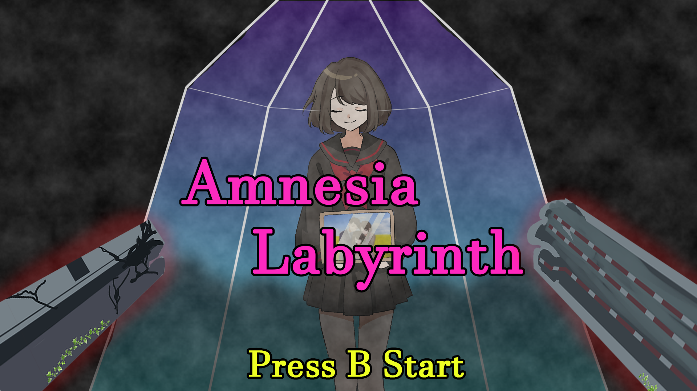
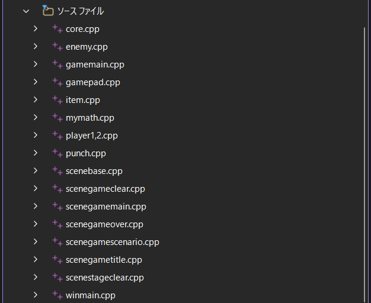

概要

ジャンル
協力タワーディフェンス的シューティングゲーム
制作期間
5日間(2025/6/30-2025/7/4)
製作人数
8名(プランナー2名、プログラマー1名、デザイナー5名)
担当箇所
プレイヤー、敵、アイテム、コア、線分との当たり判定
開発環境
C言語、C++、Visual Studio、DXライブラリ
ゲームプレイ動画
どんなゲーム？
『Amnesia_Labyrinth』は、父親と母親を操作し、記憶を失った娘を守りながら家族の記憶を取り戻す、2人協力タワーディフェンス的シューティングです。
上空から降り注ぐのは、娘の心に刻まれた“トラウマの言葉”。2人は線でつながれた状態で移動し、言葉を避けるか、具現化した敵を攻撃して退けます。
記憶の欠片は、プレイヤー自身または2人を結ぶ線で触れることで獲得可能。
集めた欠片を2人同時にチャージすると、失われたHPと崩れた背景が修復され、家族の思い出が少しずつ蘇ります。
協力して5つのハートを取り戻せば勝利。互いの位置取りと息を合わせることが、娘を救う鍵となります。
企画書はこちらアピールポイント
線分を利用した当たり判定
プレイヤー2人の座標から線分を作成し、その線分が敵やアイテムの矩形に触れているかを判定しています。
まず、線分の両端の座標が矩形の内部に入っているかを確認します。どちらの端点も矩形の外側にある場合は、矩形を構成する4辺と線分が交差しているかをそれぞれ判定します。
線分同士の交差判定では、各線分の始点と終点の位置関係から交差しているかを計算しています。
これにより、線分が矩形の内部を通過する場合や、矩形の辺に触れる場合も検出できるようにしています。
この処理によって、プレイヤー自身が敵やアイテムに直接触れていなくても、2人を結ぶ線が対象に触れることで判定を成立させています。
敵に触れた場合は敵を撃破し、アイテムに触れた場合はアイテムを取得してコアのゲージを増加させています。
パンチ攻撃
プレイヤーの入力に合わせてパンチを生成し、一定時間だけ敵への攻撃判定を行う処理を実装しました。
パンチは9枚の画像を順番に切り替えることで、攻撃アニメーションを表示しています。
また、パンチが発生している間はプレイヤーの移動を停止し、攻撃中であることが分かりやすいようにしています。
当たり判定では、パンチの矩形と敵の矩形が重なっているかを判定し、接触した敵のHPを減少させています。
同じパンチで同じ敵に複数回ダメージが入らないよう、敵ごとに当たり判定済みの状態を管理しています。
これにより、パンチのアニメーションと攻撃判定を連動させ、1回の攻撃で適切にダメージを与えられるようにしました。
パンチした状態
敵の状態変化
敵は出現後、画面下方向へ移動し、一定の位置まで到達するとコアを追跡する状態へ変化するように実装しました。
初期状態では一定の速度で下方向へ移動し、画面中央付近まで到達すると状態を切り替えます。
状態が変化すると、コアの位置を取得し、コアに向かって移動するようにしています。
また、敵の種類によってHPや移動速度を変更し、それぞれ異なる特徴を持たせています。
このように、敵の位置に応じて移動方法を切り替えることで、単純に直線移動するだけではなく、プレイヤーが敵の接近に対応する必要がある動きを実現しました。
敵が中央から変化したときの状態
コードの分離
ゲーム内の処理を役割ごとに分け、プレイヤー、敵、アイテム、コア、パンチなどの処理をそれぞれのファイルで管理しました。
各処理を分離することで、特定の機能を修正する際に関連するコードを見つけやすくし、他の処理への影響を抑えられるようにしています。
また、ゲーム全体の進行や当たり判定など、複数のオブジェクトに関係する処理はシーン側で管理し、それぞれのオブジェクトの生成・移動・描画などの処理と役割を分けています。
このように処理の役割を分けることで、コードを整理し、機能の追加や修正を行いやすい構成にしました。

ファイルの分離したフォルダー